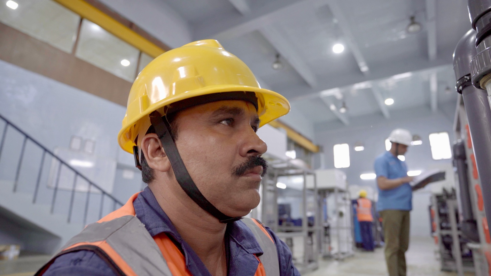
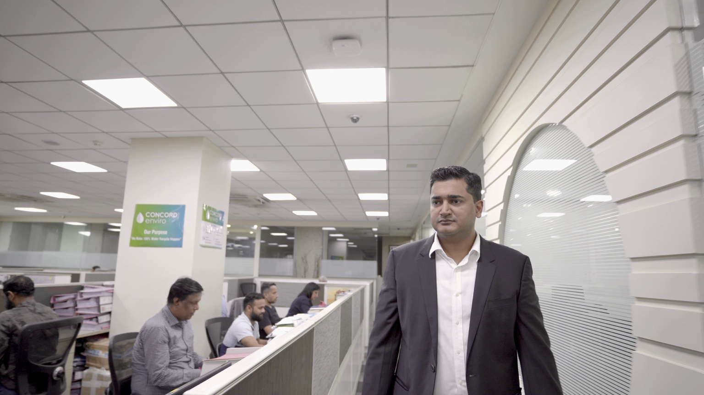
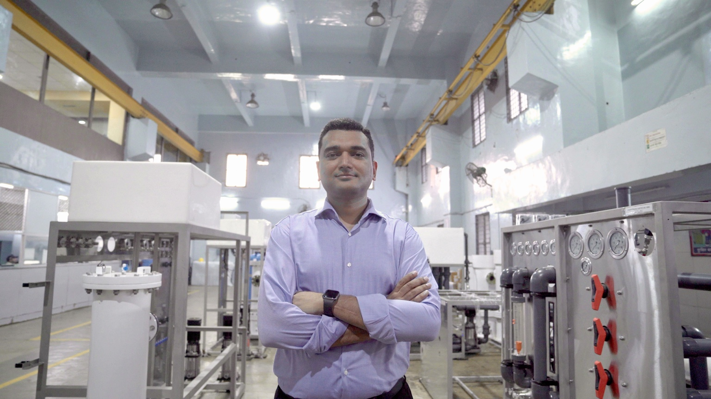
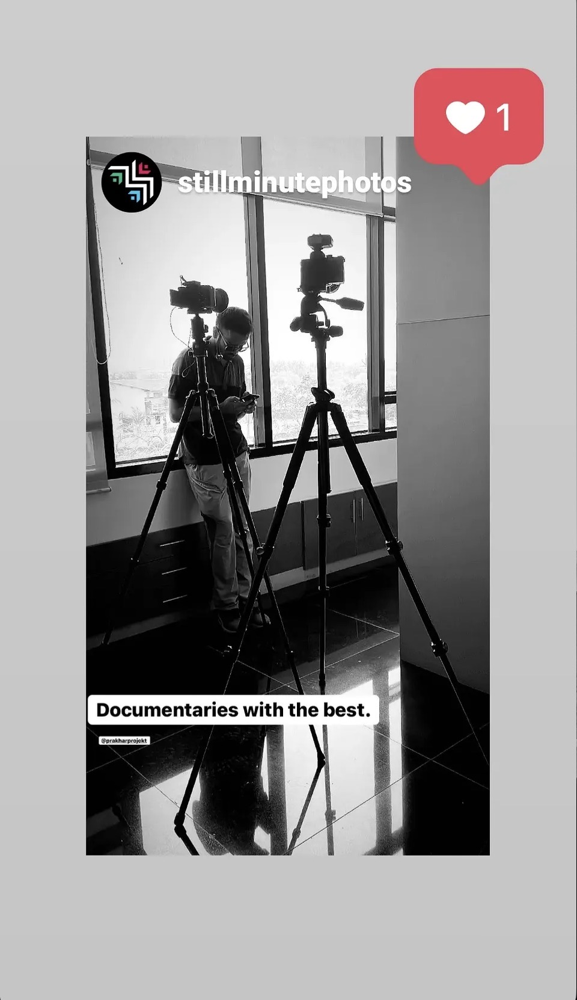
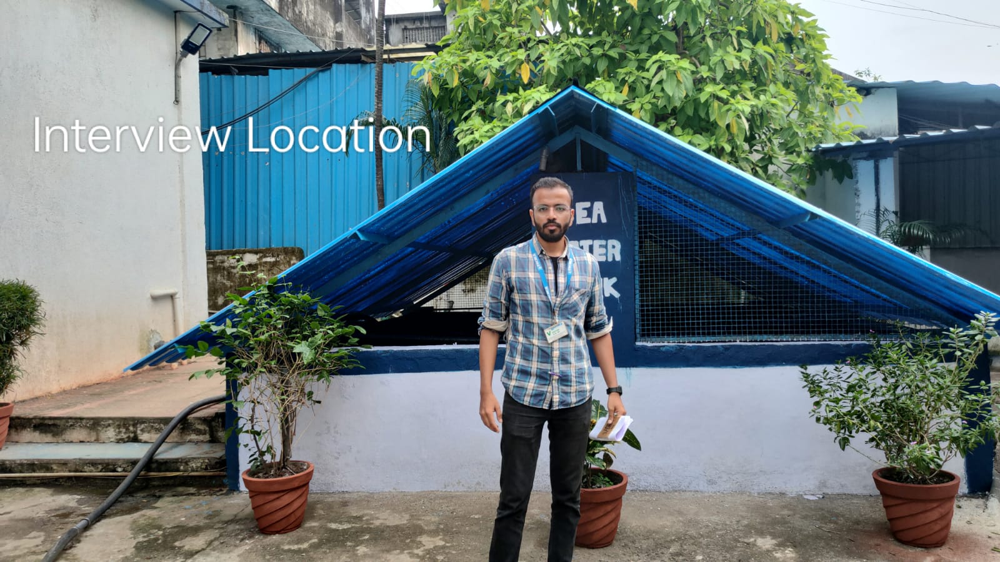
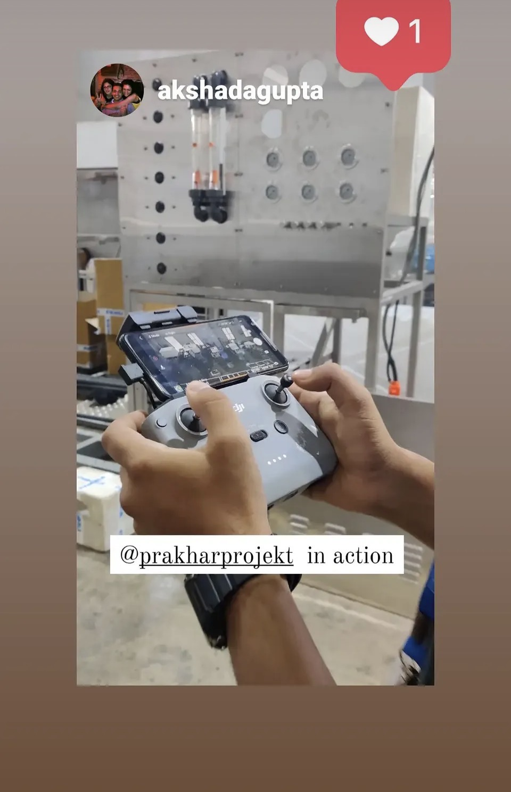

Inside the systems that keep water and industry moving.
For GF Piping Systems, I worked on an industrial corporate film that took the camera inside working production and office environments in India.
The film moves between people, machinery, manufacturing processes and the spaces where technical decisions are made — using the workplace itself as the visual language of the story.

Technical stories become human stories when you put people inside the process.
The production involved filming interviews and observational sequences across industrial spaces — from manufacturing floors and equipment to offices and working teams.






Factories have their own rhythm. The job is to listen to it — and find the people who make the machinery mean something.